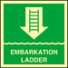
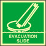
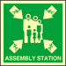
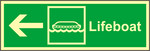
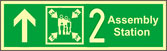
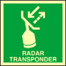

| На судне снаряжение для пожарного должно храниться | В специально отведённых местах |
| Какие факторы пожара являются опасными для человека |
|
| Укажите меры предосторожности которые необходимо соблюдать при проведении разведки пожара |
|
| В каком случае разведчики должны немедленно выйти из опасной зоны |
|
| Члены экипажа до выполнения возложенных обязанностей по противопожарной защите судна должны пройти инструктаж |
|
| Тушение горящих взрывчатых веществ производится | Водой |
| Чем тушатся небольшие очаги возгорания? | Переносными средствами пожаротушения |
| Горящее под напряжением электрооборудование можно гасить | Углекислотой |
| При тушении пожаров электрооборудования под напряжением в первую очередь необходимо | Обесточить аварийное помещение и оборудование |
| Каждый член экипажа обнаруживший пожар или его признаки обязан | Сообщить на мостик и приступить к ликвидации пожара |
| При тушении пожаров на открытых палубах и надстройках можно использовать | Можно использовать и пену и воду, но не вместе |
| Кто на судне информируется о наиболее эффективных, рекомендуемых и запрещённых средствах тушения опасных грузов? | Все члены экипажа |
| Какие средства пожаротушения можно использовать для тушения генераторов электрического тока под напряжением | Переносные углекислотные или порошковые огнетушители |
| Для тушения горящего топлива с использованием мелкораспылённой воды распылённые струи следует подавать | Под пламя |
| Для тушения горящего топлива с использованием пены её следует подавать | На край участка пожара, постепенно перемещая к центру и покрывая всю горящую поверхность |
| Одновременное использование мелкораспылённой воды и пены для тушения горящего топлива | Не допускается |
| Горящее обесточенное электрооборудование для избежания его порчи рекомендуется гасить | Углекислотой |
| Какие меры являются наиболее важными при обнаружении пожара кем-либо из членов экипажа |
|
| Что нужно сделать после того, как пожар потушен? |
|
| Что необходимо сделать при поступлении пара в машинное отделение? |
|
| Какие огнетушащие средства можно использовать для тушения горящего топлива? |
|
| Выражение «пожар взят под контроль» означает |
|
| При тушении пожара за бортом судна необходимо |
|
| Чем рекомендуется тушить горящее жидкое топливо? |
|
| Наибольший эффект при тушении пожаров углекислым газом достигается | Во всех замкнутых объёмах |
| Пена является наиболее эффективным средством для тушения | Нефтепродуктов |
| Для тушения судовых пожаров применяются |
|
| При поверхностном способе тушения пожаров используются |
|
| Установки пенотушения используются для защиты |
|
| Что нужно учитывать при тушении пожаров углекислым газом |
|
| Какие недостатки присущи воде, как огнетушащему веществу |
|
| Автоматические извещатели пожара должны срабатывать от воздействия |
|
| Где должны располагаться ручные пожарные извещатели | В каждой пожарной зоне |
| Три продолжительных сигнала звонком громкого боя означают | Человек за бортом |
| Учения по судовым тревогам на грузовых судах должны проводиться не реже одного раза | В месяц |
| Учения по судовым тревогам на пассажирских судах должны проводиться не реже одного раза | В неделю |
| Главной задачей в ситуации, грозящей судну гибелью, является | Спасение людей |
| Звуковым сигналом общесудовой тревоги является | Семь коротких и один продолжительный звуковые сигналы |
| Команду об оставлении судна может подать | Капитан судна |
| Укажите действия, которые должен выполнить член экипажа, заметивший человека за бортом, при условии, что в непосредственной близости от него находятся другие члены экипажа | Бросить спасательный круг, голосом объявить «Человек за бортом!», продолжать вести наблюдение и указывать на него рукой |
| Укажите действия, которые должен выполнить член экипажа, заметивший человека за бортом | Выполнить все указанные действия |
| В каюте каждого члена экипажа должны храниться | Каютная карточка, содержащая выписку из расписания по тревогам |
| Пиротехнические средства должны храниться | На верхнем мостике в металлических закрытых шкафах |
| Кто отвечает за проведение систематических осмотров и проверок стационарных средств борьбы за живучесть судна? | Командный состав по заведованию |
| (embarkation ladder) Символ, изображённый на рисунке, обозначает | Место установки штормтрапа для спуска на шлюпку |
| (evacuatin slide) Символ, изображённый на рисунке, обозначает | Место установки эвакуационного спуска |
| (lifejacket) Символ, изображённый на рисунке, обозначает | Место хранения спасательного жилета |
| (epirb) Символ, изображённый на рисунке, обозначает | Место установки аварийного радио буя |
| (rocket parachute flares) Символ, изображённый на рисунке, обозначает | Место хранения парашютных ракет |
| (medical locker) Символ, изображённый на рисунке, обозначает | Медпункт |
| (emergency telephone) Символ, изображённый на рисунке, обозначает | Аварийный телефон |
| (assembly station) Символ, изображённый на рисунке, обозначает | Место сбора пассажиров по тревоге |
| (lifeboat) Символ, изображённый на рисунке, обозначает | Направление движения по коридору к спасательной шлюпке |
| (2 assembly station) Символ, изображённый на рисунке, обозначает | Место сбора людей для посадки в спасательное средство с его судовым номером |
| (radar transponder) Символ, изображённый на рисунке, обозначает | Место хранения судового радиолокационного ответчика |
| Стояночное расписание по общесудовой тревоге находиться | На видном месте у трапа |
| По шлюпочной тревоге необходимо |
|
| Кто может привлекаться для осуществления мероприятий по борьбе за живучесть судна? |
|
| В каютной карточке пассажира должно быть указано |
|
| Сигнал, состоящий из 7 коротких и 1 длинного звука звонком громкого боя означает |
|
| По команде оставить судно следует |
|
| Каждый вновь прибывший член экипажа должен не позднее, чем через 2 недели после прибытия на судна получить инструктаж |
|
| Что понимается под термином «особый район» в отношении требований МК МАПРОЛ 73/78? | Морской район, где необходимо принятие особых методов предотвращения загрязнения моря |
| При нахождении судна за пределами особого района выбрасывание в море сепарационных и упаковочных материалов производится настолько далеко от ближайшего берега, настолько это выполнимо, но в любом случае не ближе от ближайшего берега чем | 25 миль |
| На каком расстоянии от берега при нахождении судна за пределами особого района запрещается сбрасывать за борт пищевые отходы и другой мусор? | Менее 12 миль |
| Судно находится на удалении 8 миль от ближайшего берега вне пределов особого района. Могут ли пищевые отходы и мусор (бумага, ветошь, стекло) быть выброшены за борт? | Да, если мусор измельчён или размолот |
| Судно находится на удалении 1 мили от ближайшего берега вне пределов особого района. Могут ли пищевые отходы и мусор (бумага, ветошь, стекло) быть выброшены за борт? | Нет |
| Судно находится на удалении 20 миль от ближайшего берега вне пределов особого района. Могут ли пищевые отходы и мусор (бумага, ветошь, стекло) быть выброшены за борт? | Да |
| Судно находится на удалении 15 миль от ближайшего берега в пределах особого района. Могут ли пищевые отходы быть выброшены за борт? | Да |
| Судно находится на удалении 6 миль от ближайшего берега в пределах особого района. Могут ли пищевые отходы быть выброшены за борт? | Нет |
| Судно находится на удалении 3 миль от ближайшего берега в пределах особого района. Могут ли пищевые отходы быть выброшены за борт? | Нет |
| В каких случаях МК МАПРОЛ 73/78 разрешает выбрасывание за борт вредных веществ, перевозимых в упаковке | При необходимости обеспечения безопасности судна и сохранения человеческой жизни |
| Судам, находящимся на акватории морского порта РФ или подходах к нему сливать за борт судна сточные воды | Запрещено, за исключением случаев, установленных правилом 11 главы 3 Приложения Ⅳ к Международной конвенции МАРПОЛ |
| Судам, находящимся на акватории морского порта РФ или подходах к нему выбрасывать за борт судна пищевые отходы | Запрещено |
| Судам, находящимся на акватории морского порта РФ или подходах к нему выбрасывать за борт судна бытовые отходы | Запрещено |
| Судам, находящимся на акватории морского порта РФ или подходах к нему разводить открытый огонь и сжигать отходы любого рода на борту судна | Запрещено |
| Судам, находящимся на акватории морского порта РФ или подходах к нему производить мойку трюмов, палуб и надстроек со сбросом воды за борт | Запрещено, если вода загрязнена нефтепродуктами или другими вредными веществами |
| Судно находится на удалении 15 миль от ближайшего берега в пределах особого района. Может ли мусор, включая бумагу, ветошь, стекло, быть выброшен за борт? | Нет |
| Судно находится на удалении 6 миль от ближайшего берега в пределах особого района. Может ли мусор, включая бумагу, ветошь, стекло, быть выброшен за борт? | Нет |
| Судно находится на удалении 12 миль от ближайшего берега в пределах особого района. Может ли мусор, включая бумагу, ветошь, стекло, быть выброшен за борт? | Нет |
| Судно находится на удалении 15 миль от ближайшего берега в пределах особого района. Можно ли выбросить за борт сепарационные, обшивочные и упаковочные материалы? | Нет |
| Что из перечисленного в ответах подпадает под понятие «мусор», определённое МК МАПРОЛ 73/78? |
|
| В «особых районах», определённых в МК МАПРОЛ 73/78, запрещён сброс за борт |
|
| Что разрешается выбрасывать за борт в «особых районах», определённых в МК МАПРОЛ 73/78, на расстоянии не менее 12 морских миль от ближайшего берега |
|
| Что из перечисленного в ответах запрещается выбрасывать в море |
|
| В соответствии с требованиями МК МАПРОЛ 73/78 сброс сточных вод с судна в море | Разрешён в случаях, установленных правилом 11 главы 1 Приложения Ⅳ к Международной конвенции МАПРОЛ |
| Лаки и краски на судне должны хранится | В малярной |
| Кто даёт разрешение на ремонтные работы, связанные с применением открытого огня? | Капитан судна |
| Техника безопасности. К работам на высоте должны быть отнесены все судовые работы, выполняемые на расстоянии… м и более от палубы, настила, поверхности воды и т. п. | 1,3 метра |
| Техника безопасности. К верхолазным работам должны быть отнесены все судовые работы, выполняемые на расстоянии… м и более от палубы, настила, поверхности воды и т. п. | 5 метров |
| Техника безопасности. К верхолазным работам должны быть отнесены все судовые работы, выполняемые на расстоянии… м и более от палубы, настила, поверхности воды и т. п. | 5 метров |